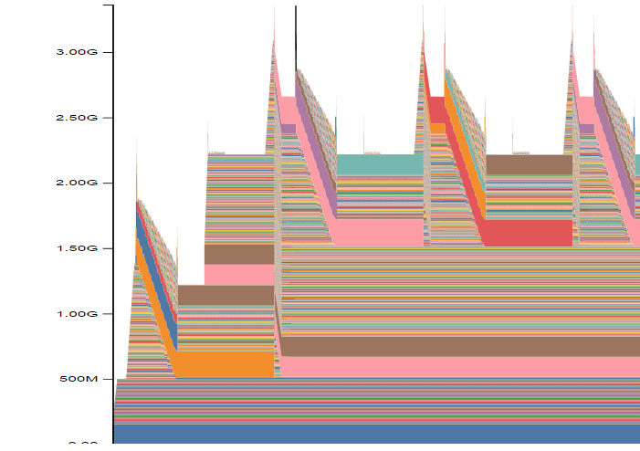
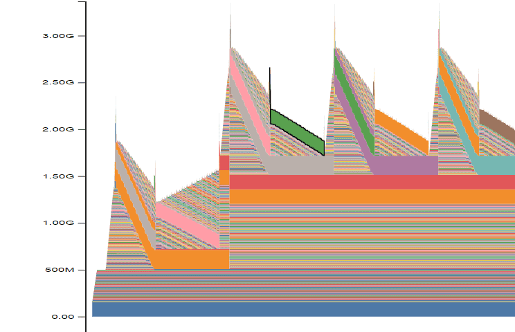

TAMIL_GPT.HTML
Pre-training GPT-2 to output Tamil tokens. We use LoRa so that we can retain knowledge from the previous training and reduce the number of parameters to train. The dataset used is a cleaned version of the CulturaX dataset.
The bottleneck while training the model happened to be memory. Here is how I reduced the memory footprint.
1) Fusing optimization and backpropagation
On profiling, I noticed these spikes: 
These spikes are due to the allocation while backpropagation. We can remove them if we don't save the gradients. Instead, we use them to correct the weights as soon as we compute them. This results in the following: 
2) Mixed precision
This is a way to use float16 in a few operations and float32 in the rest. This results in trading off precision for performance.
3) Compiling
After compiling the model to triton, we know what's going to happen, and when. This reduces memory footprint during training and inference.